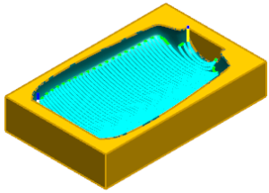
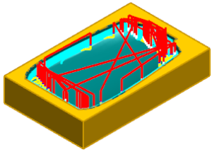

工序 CONTOUR_AREA_NON_STEEP 以及 ZLEVEL 为曲面轮廓铣削工序，用于精加工型腔。
在工序导航器中，点击 CONTOUR_AREA_NON_STEEP 以查看刀轨。
陡峭空间范围参数将限制切削区域，允许刀具从一侧的非陡峭区域切削到另一侧，但防止刀具向下切削以及直接嵌入型腔的壁。

点击 ZLEVEL 以查看刀轨。
工序 ZLEVEL 用于加工由工序 CONTOUR_AREA_NON_STEEP 残留下的未切削区域。
